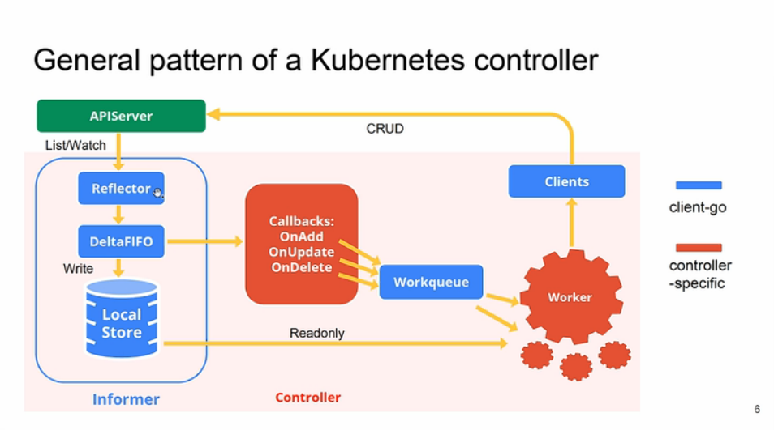

WorkQueue¶
workqueue 是 client-go 的重要组成部分，下图可以看到 workqueue 在 client-go 中的位置，后面用队列代替 workqueue。

client-go 为什么要实现队列呢？队列有点类似于 golang 中的 channel，主要用于并发程序间的数据同步。比如各种 Controller 通过 client-go 的 informer 监听对象变化，当有资源变化时通过回调函数将资源写入队列中，再由其他的协程完成处理。不直接使用 channel 主要是因为 channel 功能过于单一，无法满足各类场景的需求，比如限制数据队列的写入速度。
因为 Kubernetes 中很多模块都有队列的需求，而且很多需求都一样，所以统一在 client-go 中实现了。client-go 中抽象了几种队列，包括通用队列、限速队列、延时队列等。源码统一都在 staging/src/k8s.io/client-go 包下面。
通用队列¶
源码路径client-go/util/workqueue/queue.go，主要就是其中 Interface 这个接口的声明：
type Interface interface {
Add(item interface{}) // 向队列中添加一个原生，interface{}类型，说明可以添加任何类型的元素
Len() int // 队列长队，也就是元素个数
Get() (item interface{}, shutdown bool) // 从队列中获取一个元素，第二个返回值告知队列是否已经关闭了
Done(item interface{}) // 从队列中获取某个元素是否已经处理完
ShutDown() // 关闭队列
ShuttingDown() bool // 查询队列是否正在关闭
}需要注意的是队列和 channel 不同的地方在于 Get() 获取元素后并不会从队列中移除，只有执行了 Done() 函数后才会执行移除操作，而 channel 的 <- 调用就直接从 channel 的对象中删除了。
Interface 是一个接口的抽象定义，自然会有各种实现，这里我们就来对 client-go 中实现的通用队列进行说明，首先看几个重要的类型：
// client-go/util/workqueue/queue.go
// Type 是一个队列
type Type struct {
queue []t // 定义了我们的元素集合的顺序，队列中的每个元素都应该在脏数据集合中，而不是在处理集合中
dirty set // 脏元素集合，定义了所有需要处理的元素集合
processing set // 正在处理的元素集合，这些元素可能同时存在于脏数据集合中，当我们处理完某个元素并将其从这个集合中移除时，我们将检查它是否在脏数据集合中，如果在，则将其添加到队列中
cond *sync.Cond // 与pthread_cond_t相同，条件同步
shuttingDown bool // 关闭标记
metrics queueMetrics // 与prometheus中的metrics概念相同
}Cond
Golang 的 sync 包中的 Cond 实现了一种条件变量，可以使用在多个Reader等待共享资源ready的场景（如果只有一读一写，一个锁或者channel就搞定了）。 Cond的汇合点：多个goroutines等待、1个goroutine通知事件发生。 每个Cond都会关联一个Lock（sync.Mutex or sync.RWMutex），当修改条件或者调用Wait方法时，必须加锁，保护condition。
下面是上面这些类型的定义：
type empty struct{} // 空类型
type t interface{} // 空接口类型，实际上表示任何类型
type set map[t]empty // 用map实现的set，key才是真正的元素，任何类型都可以，所有的value是空数据就行了首先看下 Add() 函数的实现：
// 代码路径：client-go/util/workqueue/queue.go
func (q *Type) Add(item interface{}) {
// 和pthread_cond_t不同的是golang的cond自带了互斥锁
q.cond.L.Lock()
defer q.cond.L.Unlock()
// 队列正在关闭，则直接返回
if q.shuttingDown {
return
}
// 已经标记为dirt的数据，也直接返回，因为存储在了脏数据的集合中
if q.dirty.has(item) {
return
}
// 告知metrics添加元素
q.metrics.add(item)
// 添加到脏数据集合中
q.dirty.insert(item)
// 元素如果正在被处理，那就直接返回
if q.processing.has(item) {
return
}
// 追加到元素数组的尾部
q.queue = append(q.queue, item)
// 通知有新元素到了，此时有协程阻塞就会被唤醒
q.cond.Signal()
}上面是向队列添加一个元素的方法实现，但是为啥在添加数据的同时要添加到 dirty 脏数据集合中呢，存储在 queue 中不就可以了么？我们来分析以下，队列添加元素有几种状态：
- 队列关闭了，所以不接受任何数据；
- 队列中没有该元素，那就直接存储在队列中；
- 队列中已经有了该元素，这个改如何判断呢？set 类型肯定是最快的，数组需要遍历效率太低，这也是 dirty 存在的价值之一，上面的代码也通过 dirty 判断元素是否存在的；
- 队列中曾经存储过该元素，但是已经被拿走还没有调用
Done()方法时，也就是正在处理中的元素，此时再添加当前的元素应该是最新的，处理中的应该是过时的，也就是脏的。
综合上面几种状态就比较好理解 dirty 的存在了，正常情况下元素只会在 processing 和 dirty 存一份，同时存在就说明该元素在被处理的同时又被添加了一次，那么先前的那次可以理解为脏的，后续添加的要再被处理。
接下来再来看看 Get() 函数是如何实现的：
// 代码路径：client-go/util/workqueue/queue.go
// Get() 会阻塞直到它可以返回要处理的元素。如果 shutdown=true，则调用方应该结束其goroutine，处理完元素后，必须调用 Done() 方法。
func (q *Type) Get() (item interface{}, shutdown bool) {
q.cond.L.Lock()
defer q.cond.L.Unlock()
// 如果当前队列中没有数据，并且没有要关闭的状态则阻塞协程
for len(q.queue) == 0 && !q.shuttingDown {
q.cond.Wait()
}
// 协程被激活但还没有数据，说明队列被关闭了
if len(q.queue) == 0 {
// 必须返回关闭中的状态
return nil, true
}
// 从队列中弹出第一个元素
item, q.queue = q.queue[0], q.queue[1:]
// 通知metrics获取元素
q.metrics.get(item)
// 加入到处理队列中
q.processing.insert(item)
// 同时从dirty集合（需要处理的元素集合）中移除
q.dirty.delete(item)
return item, false
}然后来看下 Done() 函数：
// 代码路径：client-go/util/workqueue/queue.go
// Done 标记元素为处理中，当被处理时如果已经又被标记为 dirty，则会将其重新添加到队列中进行重新处理。
func (q *Type) Done(item interface{}) {
q.cond.L.Lock()
defer q.cond.L.Unlock()
// 通知 metrics 元素处理完了
q.metrics.done(item)
// 从正在处理的集合中删除元素
q.processing.delete(item)
// 此处判断脏数据集合，如果在处理期间又被添加回去了，则又放到队列中重新处理。
if q.dirty.has(item) {
q.queue = append(q.queue, item)
q.cond.Signal()
}
}
延时队列¶
client-go 中还定义了延时队列，如下所示：
// client-go/util/workqueue/delaying_queue.go
// DelayingInterface 是一个可以在一个时间后添加一个元素的 Interface。这使得在失败后重新排列元素更容易而不会在热循环中结束。
type DelayingInterface interface {
Interface
// AddAfter 在指定的持续时间过后将元素添加到 workqueue 中
AddAfter(item interface{}, duration time.Duration)
}从上面的定义来看延时队列和之前的通用队列基本上一致，只是多了延迟添加的接口，所以相当于在之前的通用队列基础上会添加一些机制来实现延迟添加，如下类型定义所示：
// client-go/util/workqueue/delaying_queue.go
// delayingType 包装了 Interface 然后提供了延迟 re-enquing
type delayingType struct {
Interface // 通用队列的实现
clock clock.Clock // 时钟，用于获取时间
stopCh chan struct{} // 延时就需要异步，所以需要另外一个协程处理，所以需要退出信号（让我们向等待循环发出关闭信号）
stopOnce sync.Once // 保证我们只发出一次退出信号
heartbeat clock.Ticker // 定时器，在没有任何数据操作时可以定时的唤醒处理协程（确保在激活前不超过 maxWait 时间）
waitingForAddCh chan *waitFor // 所有延迟添加的元素封装成 waitFor 放到缓冲队列中
metrics retryMetrics // 记录重试的次数
deprecatedMetrics retryMetrics
}
// waitFor 保存要添加的数据和应该添加的时间
type waitFor struct {
data t // 要添加的元素数据
readyAt time.Time // 应该被添加的时间点
index int // 优先队列（heap）中的索引
}上面是延时队列的类型定义，waitFor是保存延时的数据结构，在这个基础上还定义了一个 waitForPriorityQueue，用来实现 waitFor 元素的优先级队列，把需要延迟的元素形成了一个队列，按照元素的延时添加的时间（readyAt）从小到大排序。
通过实现 heap.Interface 接口来实现的：
// go/src/container/heap/heap.go
type Interface interface {
sort.Interface
Push(x interface{}) // add x as element Len()
Pop() interface{} // remove and return element Len() - 1.
}
// sort.Interface 定义如下所示：
// go/src/sort/sort.go
type Interface interface {
// Len is the number of elements in the collection.
Len() int
// Less reports whether the element with
// index i should sort before the element with index j.
Less(i, j int) bool
// Swap swaps the elements with indexes i and j.
Swap(i, j int)
}这里我们只需要知道 waitForPriorityQueue 是一个有序的 slice，排序方式是按照时间从小到大排序的，根据 heap.Interface 的定义，我们需要实现 Len、Less、Swap、Push、Pop 这几个方法：
// client-go/util/workqueue/delaying_queue.go
type waitForPriorityQueue []*waitFor
// 实现 Len 方法，获取队列长度
func (pq waitForPriorityQueue) Len() int {
return len(pq)
}
// 根据时间来比较排列顺序
func (pq waitForPriorityQueue) Less(i, j int) bool {
return pq[i].readyAt.Before(pq[j].readyAt)
}
// 实现交换第i和第j个元素
func (pq waitForPriorityQueue) Swap(i, j int) {
pq[i], pq[j] = pq[j], pq[i]
pq[i].index = i // 由于heap中没有索引，所以需要自己记录，waitFor中就定义了index索引
pq[j].index = j
}
// 添加元素到队列中
func (pq *waitForPriorityQueue) Push(x interface{}) {
n := len(*pq)
item := x.(*waitFor)
item.index = n // 记录索引值
*pq = append(*pq, item) // 放到slice尾部
}
// 从队列中弹出最后一个元素
func (pq *waitForPriorityQueue) Pop() interface{} {
n := len(*pq)
item := (*pq)[n-1]
item.index = -1
*pq = (*pq)[0:(n - 1)] // 去掉最后一个元素
return item
}
// 返回第一个元素，注意并没有移走
func (pq waitForPriorityQueue) Peek() interface{} {
return pq[0]
}因为延时队列利用 waitForPriorityQueue 队列管理所有延时添加的元素，所有的元素在 waitForPriorityQueue 中按照时间从效到大排序，这样延时队列的处理就会方便很多了。
下面我们来看下延时队列的实现，由于延时队列包装了通用队列，所以我们只需要查看新增的实现延时的函数即可：
// client-go/util/workqueue/delaying_queue.go
// AddAfter 在给定的延时时间后添加元素到 workqueue 队列上
func (q *delayingType) AddAfter(item interface{}, duration time.Duration) {
// 如果已经关闭则直接返回
if q.ShuttingDown() {
return
}
// 记录 metrics
q.metrics.retry()
q.deprecatedMetrics.retry()
// 不需要延迟，那就直接添加
if duration <= 0 {
q.Add(item)
return
}
// 把元素封装成 waitFor 传入 channel，由于 select 没有default，所以被阻塞
// 这里使用 stopCh，因为有阻塞的可能，所以用 stopChn 可以保证退出
select {
case <-q.stopCh:
// 如果 ShutDown() 被调用，则退出
case q.waitingForAddCh <- &waitFor{data: item, readyAt: q.clock.Now().Add(duration)}:
}
}AddAfter() 就是简单把元素送到 channel 中，所以核心实现是从 channel 中获取数据的部分，如下所示：
// client-go/util/workqueue/delaying_queue.go
// waitingLoop 一直运行直到 workqueue 关闭了并检查要添加的元素列表
func (q *delayingType) waitingLoop() {
defer utilruntime.HandleCrash()
// 当没有元素需要延时添加的时候利用这个变量实现长时间等待
never := make(<-chan time.Time)
// 初始化上面的有序队列
waitingForQueue := &waitForPriorityQueue{}
heap.Init(waitingForQueue)
// 这个map用来避免重复添加，如果重复添加则只更新时间即可
waitingEntryByData := map[t]*waitFor{}
// 开始死循环
for {
// 队列关闭了则直接返回
if q.Interface.ShuttingDown() {
return
}
// 获取当前时间
now := q.clock.Now()
// 判断有序队列中是否有元素
for waitingForQueue.Len() > 0 {
// 获得有序队列中的第一个元素
entry := waitingForQueue.Peek().(*waitFor)
// 元素指定的时间是否过了？没有的话就跳出循环
if entry.readyAt.After(now) {
break
}
// 如果时间已经过了，那就从有序队列中拿出来放入通用队列中
// 1.heap.Pop()将第一元素和最后一个元素交换，然后重新调用down下沉函数，保证是一个最小堆，然后调用 waitingForQueue.Pop() 弹出最后一个元素(实际上是第一个元素)
// 2.从有序队列把元素弹出，同时要把元素从上面的避免重复的map中删除
entry = heap.Pop(waitingForQueue).(*waitFor)
q.Add(entry.data)
delete(waitingEntryByData, entry.data)
}
// 如果有序队列中没有元素，那就不用等待了，也就是永久等下去
// 如果有序队列中有元素，那就用第一个元素指定的时间减去当前时间作为等待时间
// 有序队列用时间排序，后面的元素需要等待的时间更长，所以先处理排序靠前的元素
nextReadyAt := never
if waitingForQueue.Len() > 0 {
entry := waitingForQueue.Peek().(*waitFor)
// 元素执行的时间
nextReadyAt = q.clock.After(entry.readyAt.Sub(now))
}
// 进入各种等待
select {
// 退出信号
case <-q.stopCh:
return
// 定时器，ticker，每隔一段时间接收一个ticker，重新执行一次大循环，否则select就hang住了
case <-q.heartbeat.C(): // 继续循环，将添加准备好的元素
// 这个就是有序队列里面需要等待时间的信号，时间到就会有信号
case <-nextReadyAt: // 继续循环，将添加准备好的元素
// 这里是从channel中获取元素，AddAfter()放入到channel中的元素
case waitEntry := <-q.waitingForAddCh:
// 时间没有过就插入到有序队列中
if waitEntry.readyAt.After(q.clock.Now()) {
insert(waitingForQueue, waitingEntryByData, waitEntry)
} else {
// 如果时间已经过了就直接放入通用队列
q.Add(waitEntry.data)
}
// 由于队列中一次性可能会添加多个元素，在上面执行代码的期间可能 channel 数据积压了，如果全都从下一次循环来处理，需要消耗的时间太长了，所以这里再用一个循环来把当前 channel 中的数据全部取出来，不过需要注意这里用了 default，意味着 channel 中没有数据就会立刻停止
drained := false
for !drained {
select {
case waitEntry := <-q.waitingForAddCh:
if waitEntry.readyAt.After(q.clock.Now()) {
insert(waitingForQueue, waitingEntryByData, waitEntry)
} else {
q.Add(waitEntry.data)
}
default:
drained = true
}
}
}
}
}其中插入元素到有序队列的实现如下所示：
// client-go/util/workqueue/delaying_queue.go
// insert 添加元素到优先级队列中，如果已经存在队列中了则更新 readyAt 时间
func insert(q *waitForPriorityQueue, knownEntries map[t]*waitFor, entry *waitFor) {
// 如果元素已经存在，当时间会导致元素更快排队时则更新时间
existing, exists := knownEntries[entry.data]
if exists {
// 执行时间更早了则更新 readyAt 时间
if existing.readyAt.After(entry.readyAt) {
existing.readyAt = entry.readyAt
heap.Fix(q, existing.index)
}
return
}
// 把元素放入有序队列中，并记录在map里面,这个map就是上面用于判断对象是否重复添加的map
// 注意，这里面调用的是 heap.Push，不是 waitForPriorityQueue.Push
heap.Push(q, entry)
knownEntries[entry.data] = entry
}到这里就实现了延时队列的核心功能，最主要的还是使用 golang 中的 heap，用堆来实现了元素按时间先后进行排序，这样延时队列就可以一个一个的等待超时添加了。
限速队列¶
限速队列应用得非常广泛，比如在我们做一些操作失败后希望重试几次，但是立刻重试很有可能还是会失败，这个时候我们可以延迟一段时间再重试，而且失败次数越多延迟时间越长，这个其实就是限速。首先我们需要来了解下限速器。
限速器¶
限速器是 client-go 中的一种抽象，具体实现可以有很多种，比如比较极端的就是不限制任何速度，下面是限速器的接口抽象定义：
// client-go/util/workqueue/default_rate_limiters.go
type RateLimiter interface {
When(item interface{}) time.Duration // 获取item元素应该等待多长时间
Forget(item interface{}) // 表示元素已经完成了重试，不管是成功还是失败都会停止跟踪，也就是抛弃该元素
NumRequeues(item interface{}) int // 返回元素失败的次数（也就是放入队列的次数）
}1.ItemExponentialFailureRateLimiter 是比较常用的限速器，他会根据元素错误次数逐渐累加等待时间，定义如下所示：
// client-go/util/workqueue/default_rate_limiters.go
// baseDelay*2^<num-failures>
type ItemExponentialFailureRateLimiter struct {
failuresLock sync.Mutex // 互斥锁
failures map[interface{}]int // 记录每个元素错误次数，每调用一次When累加一次
baseDelay time.Duration // 元素延迟基数
maxDelay time.Duration // 元素最大的延迟时间
}
// 用来判断该结构体是否实现了 RateLimiter 接口，用作类型断言，如果没有实现接口 RateLimiter 则编译错误。
// 主要是为了触发 interface 编译器检查，看个人习惯，是否在这个地方进行检查
var _ RateLimiter = &ItemExponentialFailureRateLimiter{}该限速器对应的限速器实现如下所示：
// client-go/util/workqueue/default_rate_limiters.go
func (r *ItemExponentialFailureRateLimiter) When(item interface{}) time.Duration {
r.failuresLock.Lock()
defer r.failuresLock.Unlock()
// 累加错误次数
exp := r.failures[item]
r.failures[item] = r.failures[item] + 1
// 通过错误次数计算延迟时间，公式是2^i * baseDelay，按指数递增
backoff := float64(r.baseDelay.Nanoseconds()) * math.Pow(2, float64(exp))
// backoff 是有上限的，这样'calculated' 值不会溢出
if backoff > math.MaxInt64 {
return r.maxDelay
}
// 计算后的延迟值和最大延迟值二者取最小值
calculated := time.Duration(backoff)
if calculated > r.maxDelay {
return r.maxDelay
}
return calculated
}
func (r *ItemExponentialFailureRateLimiter) NumRequeues(item interface{}) int {
r.failuresLock.Lock()
defer r.failuresLock.Unlock()
return r.failures[item]
}
func (r *ItemExponentialFailureRateLimiter) Forget(item interface{}) {
r.failuresLock.Lock()
defer r.failuresLock.Unlock()
delete(r.failures, item)
}使用 ItemExponentialFailureRateLimiter 限速器一般就是操作失败后又不断尝试，随着尝试次数的增加按照指数增加延迟时间。
2.ItemFastSlowRateLimiter 和上面的指数级限速器很像，都是用于错误尝试的，但是二者的限速策略不同，ItemFastSlowRateLimiter 是尝试次数超过阈值后用长延迟，否则用短延迟，具体的实现如下所示：
// client-go/util/workqueue/default_rate_limiters.go
// 以短延迟重试，达到阈值后开始用长延迟
type ItemFastSlowRateLimiter struct {
failuresLock sync.Mutex // 互斥锁
failures map[interface{}]int // 错误次数计数
maxFastAttempts int // 错误尝试次数阈值
fastDelay time.Duration // 短延迟时间
slowDelay time.Duration // 长延迟时间
}该限速器对应的限速器实现如下所示：
// client-go/util/workqueue/default_rate_limiters.go
func (r *ItemFastSlowRateLimiter) When(item interface{}) time.Duration {
r.failuresLock.Lock()
defer r.failuresLock.Unlock()
// 错误次数+1
r.failures[item] = r.failures[item] + 1
// 错误次数未超阈值，用短延迟
if r.failures[item] <= r.maxFastAttempts {
return r.fastDelay
}
// 错误次数超过阈值，用长延迟
return r.slowDelay
}
func (r *ItemFastSlowRateLimiter) NumRequeues(item interface{}) int {
r.failuresLock.Lock()
defer r.failuresLock.Unlock()
return r.failures[item]
}
func (r *ItemFastSlowRateLimiter) Forget(item interface{}) {
r.failuresLock.Lock()
defer r.failuresLock.Unlock()
delete(r.failures, item)
}3.MaxOfRateLimiter 限速器内部是一个限速器 slice，每次返回所有限速器里面延迟最大的一个限速器，具体的实现如下所示：
// client-go/util/workqueue/default_rate_limiters.go
type MaxOfRateLimiter struct {
limiters []RateLimiter // 限速器slice
}该限速器对应的限速器实现如下所示：
// client-go/util/workqueue/default_rate_limiters.go
func (r *MaxOfRateLimiter) When(item interface{}) time.Duration {
ret := time.Duration(0)
// 获取所有限速器里面时间最大的
for _, limiter := range r.limiters {
curr := limiter.When(item)
if curr > ret {
ret = curr
}
}
return ret
}
func (r *MaxOfRateLimiter) NumRequeues(item interface{}) int {
ret := 0
// 同样获取所有限速器里面最大的 Requeue 次数
for _, limiter := range r.limiters {
curr := limiter.NumRequeues(item)
if curr > ret {
ret = curr
}
}
return ret
}
func (r *MaxOfRateLimiter) Forget(item interface{}) {
// 调用所有的限速器的 Forget 方法
for _, limiter := range r.limiters {
limiter.Forget(item)
}
}4.BucketRateLimiter 限速器是利用 golang.org/x/time/rate 包中的 Limiter 来实现稳定速率(qps)的限速器，对应的结构体如下所示：
// client-go/util/workqueue/default_rate_limiters.go
// 根据 workqueue ratelimiter API 调整标准 bucket
type BucketRateLimiter struct {
*rate.Limiter
}该限速器对应的限速器实现如下所示：
// client-go/util/workqueue/default_rate_limiters.go
func (r *BucketRateLimiter) When(item interface{}) time.Duration {
// 获取延迟时间，该延迟会是一个相对固定的周期
return r.Limiter.Reserve().Delay()
}
func (r *BucketRateLimiter) NumRequeues(item interface{}) int {
// 因为是固定频率的，所以就不存在重试了
return 0
}
func (r *BucketRateLimiter) Forget(item interface{}) {
}实现¶
上面我们介绍了默认实现的几种限速器，接下来我们来看看限速队列的实现，限速队列的接口定义如下所示：
// client-go/util/workqueue/rate_limiting_queue.go
// RateLimitingInterface 将限速的元素添加到队列中的一个接口
type RateLimitingInterface interface {
DelayingInterface // 继承了延时队列
AddRateLimited(item interface{}) // 按照限速方式添加元素
Forget(item interface{}) // 表示已经重试某元素，丢弃指定的元素，该操作只会清除`rateLimter`，仍然必须在队列上调用 Done
NumRequeues(item interface{}) int // 元素放入队列的次数
}
// NewRateLimitingQueue 构造一个带有限速能力的工作队列，要记住调用 Forget！否则可能会一直跟踪失败下去。
func NewRateLimitingQueue(rateLimiter RateLimiter) RateLimitingInterface {
return &rateLimitingType{
DelayingInterface: NewDelayingQueue(), // 构造一个延迟队列
rateLimiter: rateLimiter,
}
}该限速器接口对应的实现如下所示：
// client-go/util/workqueue/rate_limiting_queue.go
// rateLimitingType wraps an Interface and provides rateLimited re-enquing
type rateLimitingType struct {
DelayingInterface // 继承延迟队列
rateLimiter RateLimiter // 添加一个限速器
}
func (q *rateLimitingType) AddRateLimited(item interface{}) {
// 通过限速器获取元素延时时间，然后加入到延迟队列中去
q.DelayingInterface.AddAfter(item, q.rateLimiter.When(item))
}
func (q *rateLimitingType) NumRequeues(item interface{}) int {
// 获取限速器中元素加上队列的次数
return q.rateLimiter.NumRequeues(item)
}
func (q *rateLimitingType) Forget(item interface{}) {
// 已经重试某元素，丢弃指定的元素
q.rateLimiter.Forget(item)
}